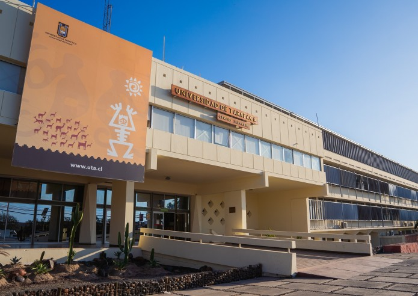
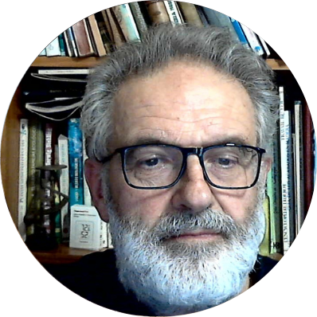
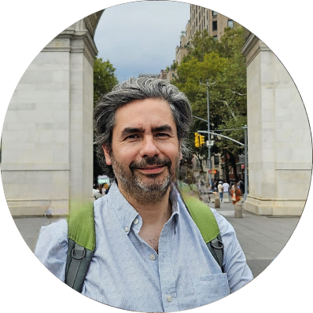

VI Congreso
Sociedad Chilena de Educación Científica
Pluralidad: Corazón de la educación científica para futuros más justos
Fotos Día 1
Fotos Día 2
Fotos Día 3
Arica, Región de Arica y Parinacota, Chile.
Lugar
Universidad de Tarapacá,Arica, Región de Arica y Parinacota, Chile.
Fecha
5, 6 y 7 de noviembre de 2025
| Miércoles 05 | Jueves 06 | Viernes 07 | |
|---|---|---|---|
| 8:00 - 8:30 | Inicio e inscripciones | Inicio e inscripciones | |
| 8:30 - 9:00 |
Conferencista internacional: Educar en ciencias con el corazón abierto (Liliana Valladares) |
Conferencista internacional: Las emociones en los profesores de Ciencias (Pedro Membiela) |
|
| 9:00 - 9:30 | |||
| 9:30 - 10:00 | Café y evento cultural | Café y evento cultural | |
| 10:00 - 10:30 | Ponencias | Ponencias | |
| 10:30 - 11:00 | |||
| 11:00 - 11:30 | |||
| 11:30 - 12:00 | |||
| 12:00 - 12:30 | |||
| 12:30 - 13:00 | Almuerzo libre | Almuerzo libre | |
| 13:00 - 13:30 | Inicio e inscripciones | ||
| 13:30 - 14:00 | |||
| 14:00 - 14:30 | Bienvenida Evento cultural | Ponencias | Talleres |
| 14:30 - 15:00 | |||
| 15:00 - 15:30 | Conversatorio profes rurales | ||
| 15:30 - 16:00 | |||
| 16:00 - 16:30 | Café | Café | Café |
| 16:30 - 17:00 |
Conferencista nacional: Del Glaciar a la sala de clases: construyendo justicia ecosocial a través de Alfabetización Cientifíca y Ambiental Crítica (Gonzalo Guerrero) |
Conferencista nacional: ¿Los datos me hablan o mis ideas los inventan?: estudio de los múltiples PCK que se ponen en juego al enseñar cambio climático (Hernán Cofré) |
Conferencista nacional: Aprender Ciencias y Ciudadanía con el enfoque territorial (Valeria Cabello) |
| 17:00 - 17:30 | |||
| 17:30 - 18:00 | Exposición de posters | Simposios | Cierre Congreso despedida |
| 18:00 - 18:30 | |||
| 18:30 - 19:00 | |||
| 19:00 - 19:30 | Bienvenida | Asamblea de socias y socios | |
| 19:30 - 20:00 | Cena | ||
| 20:00 - 21:00 |


Talleres
Circulares VI Congreso CChEC
Primera Circular
Fecha: 11 de febrero 2025
Segunda Circular
Fecha: 04 de abril 2025
Tercera Circular
Fecha: 29 de junio 2025
Inscripción
Formulario de inscripcion|
Costos de inscripción (Valores en pesos chilenos) |
Hasta el 05 de octubre | Desde el 06 de octubre | ||
|---|---|---|---|---|
| No socio | Socio | No socio | Socio | |
| Académicos e investigadores | $70.000 | $50.000 | $90.000 | $70.000 |
| Estudiantes de postgrado | $50.000 | $30.000 | $60.000 | $40.000 |
| Profesores y educadores del sistema escolar | $20.000 | $10.000 | $25.000 | $15.000 |
| Estudiante de pregrado | $15.000 | $5.000 | $20.000 | $10.000 |
|
Costos de inscripción (Valores en pesos chilenos) |
Hasta el 05 de octubre | Desde el 06 de octubre | ||
|---|---|---|---|---|
| No socio | Socio | No socio | Socio | |
| Académicos e investigadores | $90.000 | $60.000 | $120.000 | $90.000 |
| Estudiantes de postgrado | $60.000 | $40.000 | $80.000 | $60.000 |
| Profesores y educadores del sistema escolar | $30.000 | $15.000 | $40.000 | $25.000 |
| Estudiante de pregrado | $20.000 | $5.000 | $25.000 | $10.000 |
Contacto
Puedes contactarnos por nuestras redes o al correo del congreso:
congresoschec [at] gmail.com